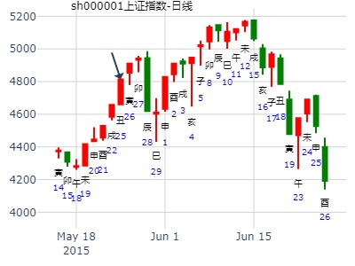
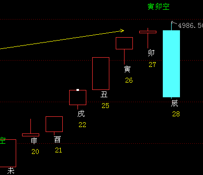
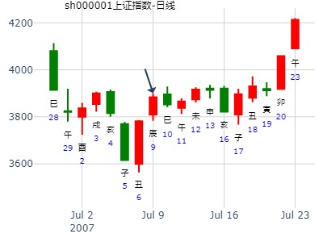
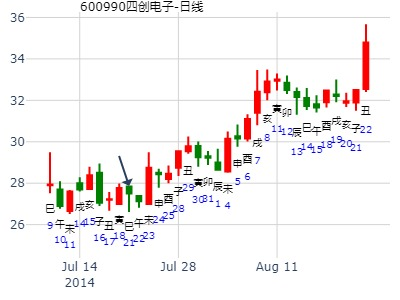
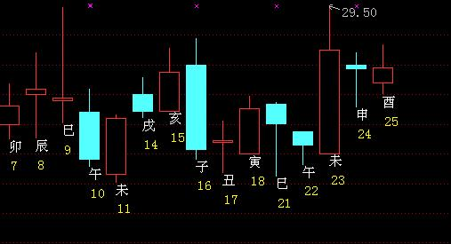
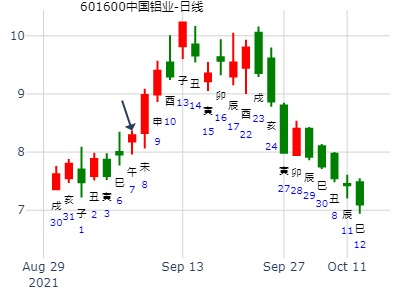
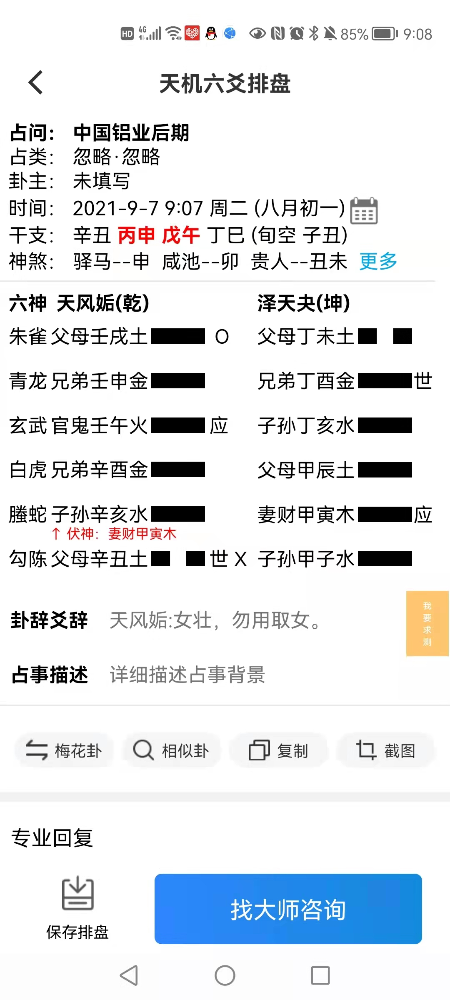
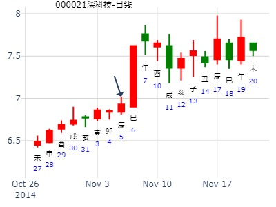

占事：2015年5月25-29日大盘走势 -起卦方式：手动摇卦
公历时间：2015年5月24日6时32分
干 支：乙未年 辛巳月 庚子日 己卯时
旬 空：辰巳 申酉 (辰巳) 申酉
乾宫：天风姤 坤宫：泽天夬
螣蛇 ▄▄▄▄▄ 父母壬戌土 O ▄▄ ▄▄ 父母丁未土
勾陈 ▄▄▄▄▄ 兄弟壬申金 ▄▄▄▄▄ 兄弟丁酉金 世
朱雀 ▄▄▄▄▄ 官鬼壬午火 应 ▄▄▄▄▄ 子孙丁亥水
青龙 ▄▄▄▄▄ 兄弟辛酉金 ▄▄▄▄▄ 父母甲辰土
玄武 妻财甲寅木 ▄▄▄▄▄ 子孙辛亥水 ▄▄▄▄▄ 妻财甲寅木 应
白虎 ▄▄ ▄▄ 父母辛丑土 世X ▄▄▄▄▄ 子孙甲子水


---参考卦：
占事：6月15日前大盘安全否？(011111硬币卦)
公历起卦时间：2015年5月27日9时16分
干支：乙未年 辛巳月 癸卯日 丁巳时 （日空：辰巳）
乾宫：天风姤 乾宫：乾为天 (六冲)
六神 伏神 本 卦 变 卦
白虎 父母壬戌土 ▅▅▅▅▅ 父母壬戌土 ▅▅▅▅▅ 世
腾蛇 兄弟壬申金 ▅▅▅▅▅ 兄弟壬申金 ▅▅▅▅▅
勾陈 官鬼壬午火 ▅▅▅▅▅ 应 官鬼壬午火 ▅▅▅▅▅
朱雀 兄弟辛酉金 ▅▅▅▅▅ 父母甲辰土 ▅▅▅▅▅ 应
青龙 妻财甲寅木 子孙辛亥水 ▅▅▅▅▅ 妻财甲寅木 ▅▅▅▅▅
玄武 父母辛丑土 ▅▅ ▅▅ 世 ╳→ 子孙甲子水 ▅▅▅▅▅
晕。卯日冲酉，按朱辰彬理论有动爻丑土生，即为旺，逢冲为暗动
(暗动为速，故隔天就暴跌）
辰日又是动而逢合的应期，又是墓子孙子水的应期，大跌。
丑化子，丑旺则论发动。亥水子孙月破。
演申到下周：申酉亥子能涨。戌要跌。
下下周：卯涨，辰跌，巳跌，午跌，未（不一定）可能冲开丑。也可能助丑克子孙。
教训：因个股组合中卯日涨停太多，反而以为辰日不一定大跌，只是盘中调整而巳。却没看到辰巳在一起。
天时章： 巽之姤合绊被冲，【合绊逢日冲直接用值日】姤之乾，天雷无妄静卦暗动动而逢合。父化子丑化子。未日冲丑时天晴。
参考： 姤之乾。父化子。丑化子。 测上证12月大盘走势。
6月第1周兼5月第4周：姤之乾，父化子丑化子。6月15日前大盘安全否？ （同样父丑化子，论发动）
增删卜易参考：
例197、
辰月丙子日，因雨占晴，得巽之姤。
兄弟卯木′ 世
子孙巳火′
妻财未土″ 动 子孙午火
官鬼酉金′ 应
父母亥水′
妻财丑土″
例198、
又令人占，得姤之乾。
父母戌土′
兄弟申金′
官鬼午火′ 应
兄弟酉金′
子孙亥水′
父母丑土″ 世 动 子孙子水
（用神为变爻被合绊，也可以冲开）
例199、
又令人占，得天雷无妄。
妻财戌土′
官鬼申金′
子孙午火′ 世
妻财辰土″
兄弟寅木″
父母子水′ 应
此因满城欲装台阁以赛神，因连日忽晴忽雨，不敢装扮。余以此三卦合而决之，知癸未日必大晴。
前卦，未土财化出午火子孙，古法谓之合住财爻不晴，予每验冲开之日必晴。
况此卦子日占，子水已冲开午火，而未土不能作合，故知未日必晴。（注：当天己经冲开了，就不论合了，而从值日找应期）
二卦，丑土父母为雨，化出子水子孙为晴，亦应未日冲开丑土，而子水子孙不能与丑作合，亦当晴于未日。
三卦，午火子孙，子日冲之而暗动，动而逢合之日，亦应晴于未日。
至癸未日，果万里晴光
主帖标题: 转其它网站对7月9日->13日预测，分析与天管分析完全相反
占事: 7月9日--13日大盘300指数预测
起卦方式：手动摇卦 龙隐网(www.longy
时间: 2007-07-08 2007年7月8日9时6分
干支: 丁亥年丁未月癸卯日 (旬空: 辰巳 )
天风姤 坤宫：泽天夬 六神
伏 神 【本 卦】 【变 卦】
白虎 ▄▄▄▄▄ 父母壬戌土 O-> ▄▄ ▄▄ 父母丁未土
螣蛇 ▄▄▄▄▄ 兄弟壬申金 ▄▄▄▄▄ 兄弟丁酉金 世
勾陈 ▄▄▄▄▄ 官鬼壬午火 应 ▄▄▄▄▄ 子孙丁亥水
朱雀 ▄▄▄▄▄ 兄弟辛酉金 ▄▄▄▄▄ 父母甲辰土
青龙 妻财甲寅木 ▄▄▄▄▄ 子孙辛亥水 ▄▄▄▄▄ 妻财甲寅木 应
玄武 ▄▄ ▄▄ 父母辛丑土 世X-> ▄▄▄▄▄ 子孙甲子水
初阴动化阳，上阳动化阴----

风生水起， 占事: 600990 下周
公历时间：2014年7月19日9时48分
干支：甲午年 辛未月 辛卯日 癸巳时
旬空：辰巳 戌亥 午未 午未
神煞：驿马─巳 桃花─子 日禄─酉 贵人─寅，午
乾宫：天风姤 坤宫：泽天夬
六神 伏 神 【本 卦】 【变 卦】
螣蛇 ▄▄▄▄▄ 父母壬戌土 O-> ▄▄ ▄▄ 父母丁未土
勾陈 ▄▄▄▄▄ 兄弟壬申金 ▄▄▄▄▄ 兄弟丁酉金 世
朱雀 ▄▄▄▄▄ 官鬼壬午火 应 ▄▄▄▄▄ 子孙丁亥水
青龙 ▄▄▄▄▄ 兄弟辛酉金 ▄▄▄▄▄ 父母甲辰土
玄武 妻财甲寅木 ▄▄▄▄▄ 子孙辛亥水 ▄▄▄▄▄ 妻财甲寅木 应
白虎 ▄▄ ▄▄ 父母辛丑土 世X-> ▄▄▄▄▄ 子孙甲子水


王注：初爻白虎父母化子孙，又为利好，但是应到了未日。
卦虽然是父母发动，但是化退，化子。而且财旺于日。
深圳房价5年趋势？
公历起卦时间：2016年8月19日12时26分 (在线摇卦)
白露：2016年09月07日13时48分
干支：丙申年 丙申月 癸酉日 戊午时 （日空：戌亥）
神煞：驿马－亥 桃花－午 日禄－子 贵人－卯，巳
乾宫：天风姤 坤宫：泽天夬
六神 伏神 本 卦 变 卦
白虎 父母壬戌土 ▅▅▅▅▅ ○→ 父母丁未土 ▅▅ ▅▅
腾蛇 兄弟壬申金 ▅▅▅▅▅ 兄弟丁酉金 ▅▅▅▅▅ 世
勾陈 官鬼壬午火 ▅▅▅▅▅ 应 子孙丁亥水 ▅▅▅▅▅
朱雀 兄弟辛酉金 ▅▅▅▅▅ 父母甲辰土 ▅▅▅▅▅
青龙 妻财甲寅木 子孙辛亥水 ▅▅▅▅▅ 妻财甲寅木 ▅▅▅▅▅ 应
玄武 父母辛丑土 ▅▅ ▅▅ 世 ╳→ 子孙甲子水 ▅▅▅▅▅
连涨几年，到2020年疫情几年见顶。
中国铝业后期-风生水起
时间: 2021-09-07 9时07分
干支: 辛丑年丁酉月戊午日 (旬空: 子丑 )
天风姤 泽天夬
六神 伏神 本 卦 变 卦
朱雀 ▅▅▅▅▅ 父母戌土 Ｏ→ ▅▅ ▅▅ 父母未土
青龙 ▅▅▅▅▅ 兄弟申金 ▅▅▅▅▅ 兄弟酉金 世
玄武 ▅▅▅▅▅ 官鬼午火 应 ▅▅▅▅▅ 子孙亥水
白虎 ▅▅▅▅▅ 兄弟酉金 ▅▅▅▅▅ 父母辰土
腾蛇 妻财寅木▅▅▅▅▅ 子孙亥水 ▅▅▅▅▅ 妻财寅木 应
勾陈 ▅▅ ▅▅ 父母丑土 世Ｘ→ ▅▅▅▅▅ 子孙子水
女壮，勿用取女。
初六：系于金柅，贞吉，有攸往，见凶，羸豕孚踟躅。
上九：姤 其角，吝，无咎。
彖︰姤，遇也，柔遇刚也。勿用取女，不可与长也。天地相遇，品物咸章也；刚遇中正，天下大行也，姤之时义大矣哉。


9月长得好板块-风生水起--天风证券
时间: 2024-09-01
干支: 甲辰年壬申月戊辰日 (旬空: 戌亥 )
天风姤 泽天夬
六神 伏神 本 卦 变 卦
朱雀 ▅▅▅▅▅ 父母戌土 Ｏ→ ▅▅ ▅▅ 父母未土
青龙 ▅▅▅▅▅ 兄弟申金 ▅▅▅▅▅ 兄弟酉金 世
玄武 ▅▅▅▅▅ 官鬼午火 应 ▅▅▅▅▅ 子孙亥水
白虎 ▅▅▅▅▅ 兄弟酉金 ▅▅▅▅▅ 父母辰土
腾蛇 妻财寅木▅▅▅▅▅ 子孙亥水 ▅▅▅▅▅ 妻财寅木 应
勾陈 ▅▅ ▅▅ 父母丑土 世Ｘ→ ▅▅▅▅▅ 子孙子水
女壮，勿用取女。
初六：系于金柅，贞吉，有攸往，见凶，羸豕孚踟躅。
九二：包有鱼，无咎，不利宾。
九三：臀无肤，其行次且，厉，无大咎。
九四：包无鱼，起凶。
九五：以杞包瓜，含章，有陨自天。
上九：姤 其角，吝，无咎。
彖︰姤，遇也，柔遇刚也。勿用取女，不可与长也。天地相遇，品物咸章也；刚遇中正，天下大行也，姤之时义大矣哉。
出生：没填 年 性别：男 占事：000021长城开发明天涨跌
排卦：元亨利贞网
公历起卦时间：2014年11月5日17时17分 (电脑自动)
干支：甲午年 甲戌月 庚辰日 乙酉时 （日空：申酉）
神煞：驿马－寅 桃花－酉 日禄－申 贵人－丑，未
乾宫：天风姤 坤宫：泽天夬
六神 伏神 本 卦 变 卦
腾蛇 父母壬戌土 ▅▅▅▅▅ ○→ 父母丁未土 ▅▅ ▅▅
勾陈 兄弟壬申金 ▅▅▅▅▅ 兄弟丁酉金 ▅▅▅▅▅ 世
朱雀 官鬼壬午火 ▅▅▅▅▅ 应 子孙丁亥水 ▅▅▅▅▅
青龙 兄弟辛酉金 ▅▅▅▅▅ 父母甲辰土 ▅▅▅▅▅
玄武 妻财甲寅木 子孙辛亥水 ▅▅▅▅▅ 妻财甲寅木 ▅▅▅▅▅ 应
白虎 父母辛丑土 ▅▅ ▅▅ 世 ╳→ 子孙甲子水 ▅▅▅▅▅

主帖标题: 提供一只股票11月26日
手摇卦
姓名： 出生年:1981 性别：男 占事：
起卦方式：手工指定
公历时间：2019年11月26日13时6分
干 支：己亥年 乙亥月 丁卯日 丁未时
旬 空：辰巳 申酉 戌亥 寅卯
神 煞：驿马─巳 桃花─子 日禄─午 贵人─酉，亥
乾宫：天风姤 坤宫：泽天夬
六神 伏 神 【本 卦】 【变 卦】
青龙 ▄▄▄▄▄ 父母壬戌土 ○ ▄▄ ▄▄ 父母丁未土
玄武 ▄▄▄▄▄ 兄弟壬申金 ▄▄▄▄▄ 兄弟丁酉金 世
白虎 ▄▄▄▄▄ 官鬼壬午火 应 ▄▄▄▄▄ 子孙丁亥水
螣蛇 ▄▄▄▄▄ 兄弟辛酉金 ▄▄▄▄▄ 父母甲辰土
勾陈 妻财甲寅木 ▄▄▄▄▄ 子孙辛亥水 ▄▄▄▄▄ 妻财甲寅木 应
朱雀 ▄▄ ▄▄ 父母辛丑土 世× ▄▄▄▄▄ 子孙甲子水
此贴无股票名